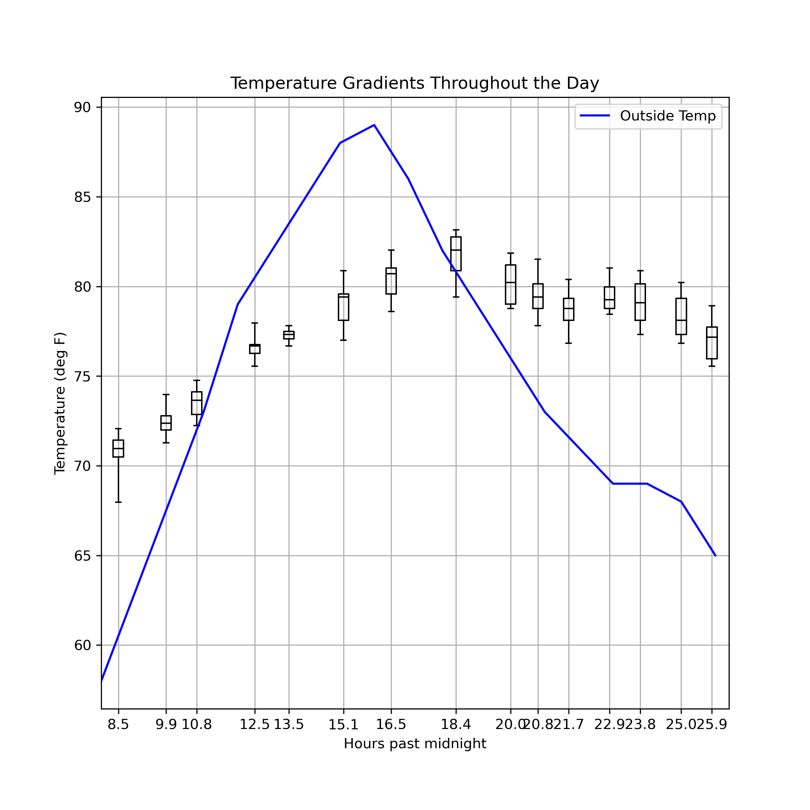
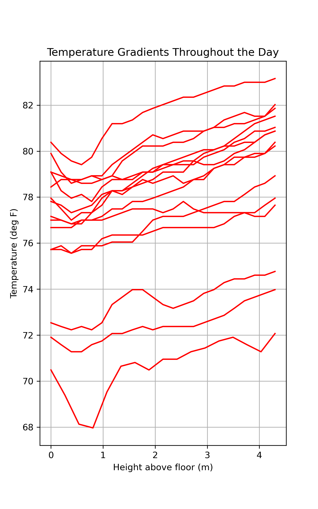

Temperatures inside my house
I collected data over 18 hours, cataloguing the temperature gradients in my two-story house.To collect the data, I used a simple thermistor circuit built with Arduino. It fed data to a micro-SD card, which I then uploaded to my computer. I measured the temperature approximately every hour at approximately 25 different heights within my house, from right next to the floor of the first story to several feet above the floor of the second story. To ensure continuity the temperatures were measured on my staircase.
Results
In the first figure, the temperature data from each hour (approximately) is plotted as a box plot. The relationship between height and temperature can be considered approximately linear, so the lower whisker generally corresponds to data taken near the floor of the first story whereas the upper whisker corresponds to data taken on the second story. The blue line is the outside temperature, as reported by wunderground.com at SJC Airport. (Note: the hour numbers correspond to the number of hours after 12:00 AM Sunday May 24, 2020 - i.e. hour 18 is 6:00 PM Sunday May 24, 2020.)
{kind=link}
Figure 1
In the second figure, the temperature is plotted against the height at which that temperature was recorded. Each line corresponds to a different time of measurement. As you can see, the temperature increases the higher up one goes within the house. (Do note: the temperature adjacent to the floor appears to be an exception to this rule - as shown in the figure, the temperature a couple feet above the floor was measured to be lower than the temperature directly above the floor.)

{kind=link}
Figure 2
The third figure is a contour plot of the temperature as a function of both time and height. Trends from both the first and second figures are clearly shown in this plot.

Figure 3 (click to enlarge in new page)